141 posts
2018 archive
December 2018
- AUASS news · Thesis defence of student Akram Farraj
-
 Lectures and events · The 12th Arab Conference on Space and Astronomy Sciences
Lectures and events · The 12th Arab Conference on Space and Astronomy Sciences
-
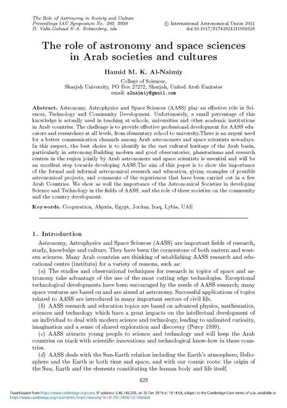
AUASS news · The role of astronomy and space sciences in Arab societies and cultures -
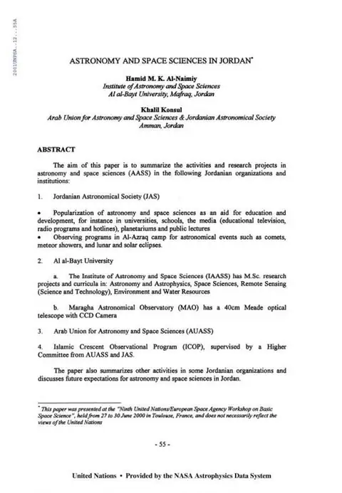
Science news · Astronomy and Space Sciences in Jordan -
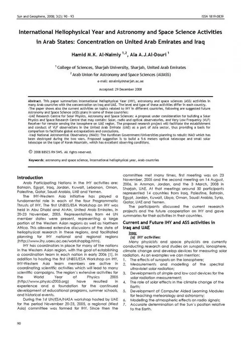
AUASS news · International Heliophysical Year and Astronomy and Space Science Activities in Arab States: Concentration on United Arab Emirates and Iraq -
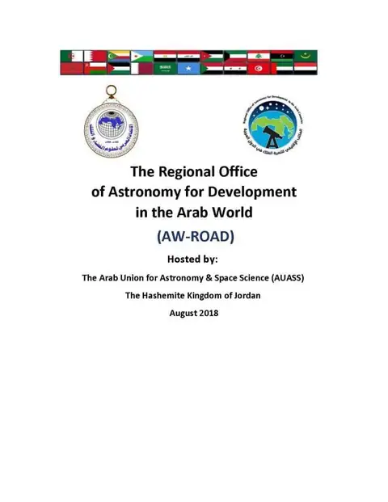
AUASS news · The Regional Office of Astronomy for Development in the Arab World -
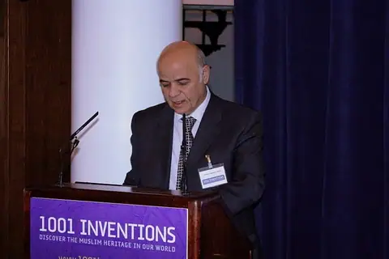
Science news · Status of Research in the History of Astronomy in the Arab World -
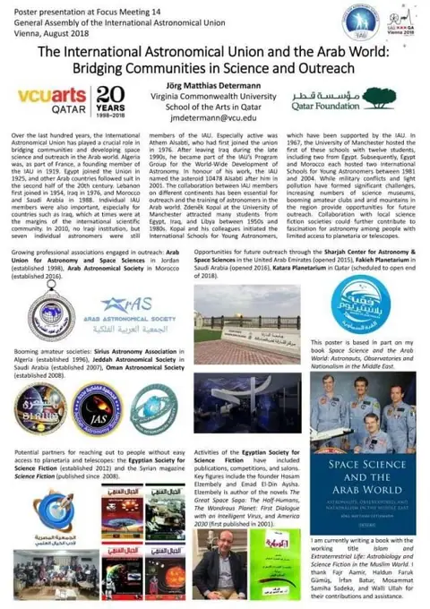
AUASS news · The International Astronomical Union and the Arab World: Bridging Communities in Science and Outreach -
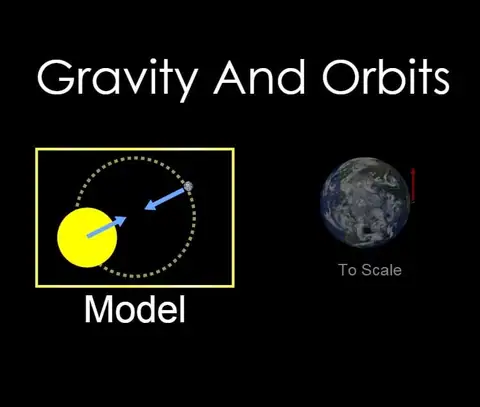
Science news · Gravity And Orbits -
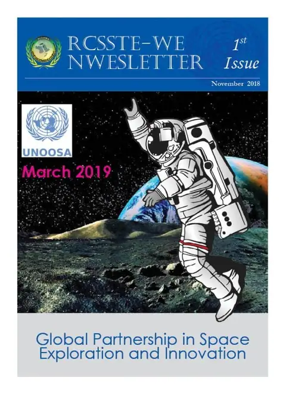
Science news · RCSSTE-WE Newsletter – Issue No.1 – November – 2018 -
 Science news · Sky and Telescope – January 2019
Science news · Sky and Telescope – January 2019
-
 Articles · Synopsis: Universe Preceded by an Antiuniverse?
Articles · Synopsis: Universe Preceded by an Antiuniverse?
-
 Articles · DNA sugar can form in space, experiments show
Articles · DNA sugar can form in space, experiments show
-
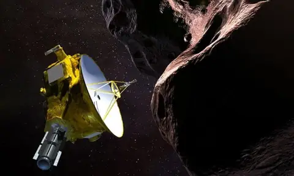
Articles · On 1 January 2019 the New Horizons probe will begin transmitting data from Ultima Thule, 4bn miles from Earth in the Kuiper belt. What will it find? -
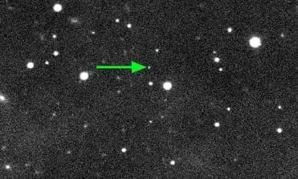
Articles · Farout: astronomers identify most distant known object in solar system -
 Articles · Beyond Einstein: Physicists find surprising connections in the cosmos
Articles · Beyond Einstein: Physicists find surprising connections in the cosmos
-
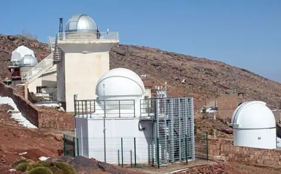
Science news · المرصد الفلكي أوكايمدن – Oukaimeden Observatory -
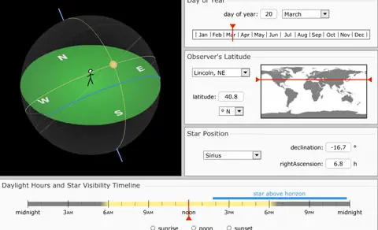
Science news · Heliacal Rising Simulator -
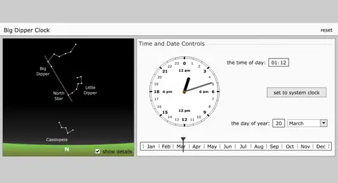
Science news · Big Dipper Clock -
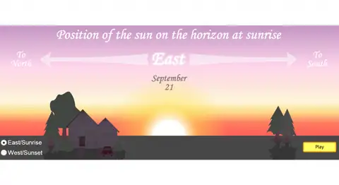
Science news · Sun’s Position on Horizon -
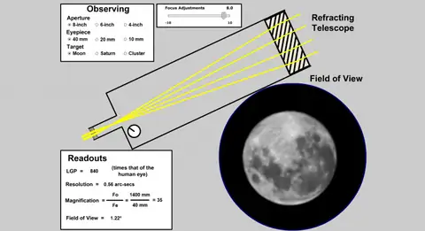
Science news · Telescope Simulator -
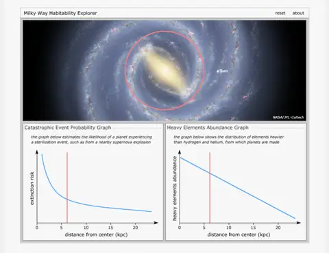
Science news · Milky Way Habitability Explorer -
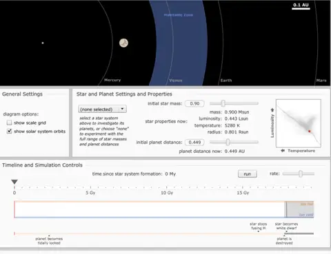
Science news · Circumstellar Habitable Zone Simulator -
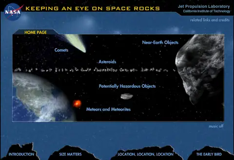
Science news · Keep an Eye on Space Rocks - Science news · JPL Apps
-
 AUASS news · Special thanks to Dr. Majeed Mahmoud Al-Jarrad, member of AUASS
AUASS news · Special thanks to Dr. Majeed Mahmoud Al-Jarrad, member of AUASS
-
 Science news · Know More about “Atlas Dark Sky”
Science news · Know More about “Atlas Dark Sky”
-
 Articles · What will the sun do next?
Articles · What will the sun do next?
- Science news · NASA’s GEDI mission will track carbon emissions in earth’s forests
-
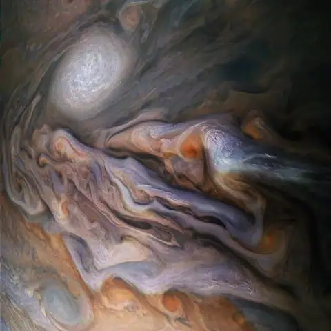
Science news · Juno’s mission to Jupiter just hit its halfway point: Here’s what we’ve learned so far - Science news · Telescope 45x Zoom apk
-
 Articles · Timeline: 50 Years of Spaceflight
Articles · Timeline: 50 Years of Spaceflight
November 2018
October 2018
-
 Lectures and events · Call to vote
Lectures and events · Call to vote
-
Lectures and events · Call to vote for The 2018 SpaceNews Award for Excellence & Innovation
-
 Science news · Open Doors Sirius Algeria Astronomy WSW 2018 Sid Ali in action… The planetarium shows…
Science news · Open Doors Sirius Algeria Astronomy WSW 2018 Sid Ali in action… The planetarium shows…
-
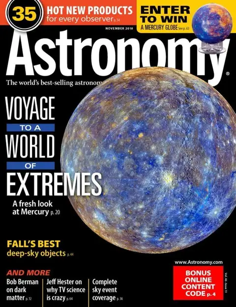
Science news · Astronomy -November 2018 -
 AUASS news · A laser pressure experiment in a promising project
AUASS news · A laser pressure experiment in a promising project
September 2018
-
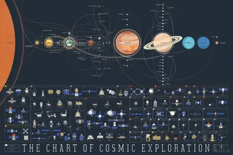
Science news · The Chart of Cosmic Exploration -
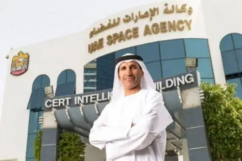
AUASS news · UAE joins Arab Union for Astronomy and Space Sciences -
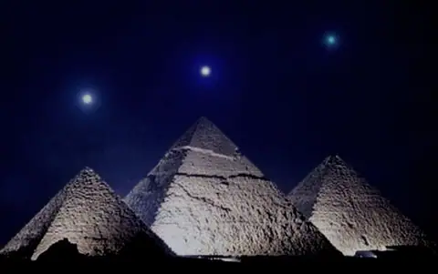
AUASS news · Egypt wins unanimous membership of the Supreme Council of the Arab Union for Space and Astronomy Sciences -
 AUASS news · Jordan discusses space cooperation with Pakistan
AUASS news · Jordan discusses space cooperation with Pakistan
-
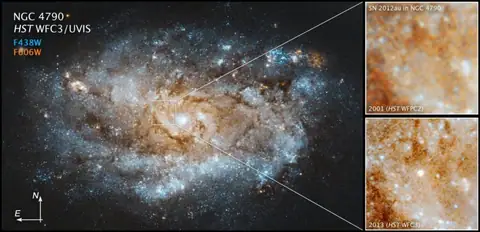
Science news · Scientists Witness Birth of New Star from Hydrogen-Poor Supernova -
 Articles · First university in Europe was established by Muslims in the year 841
Articles · First university in Europe was established by Muslims in the year 841
-
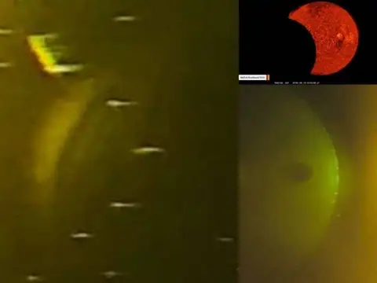
Science news · 6 More Solar Observatories closed and This could be the reason! -
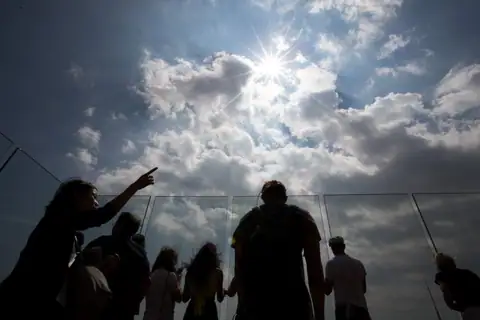
Science news · Something mysterious is happening at a solar observatory in New Mexico -
 Articles · New Type of Night Vision Found
Articles · New Type of Night Vision Found
-
 Articles · Standard Model Equation That Might Explain the Life, the Universe, and Everything
Articles · Standard Model Equation That Might Explain the Life, the Universe, and Everything
-
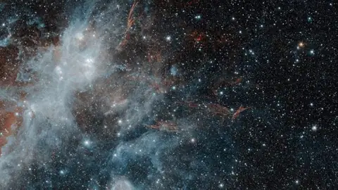
Science news · The Fading Ghost of a Long-Dead Star -
 Articles · Astronomers Watch A Young Star Eat Its Own Planet
Articles · Astronomers Watch A Young Star Eat Its Own Planet
-
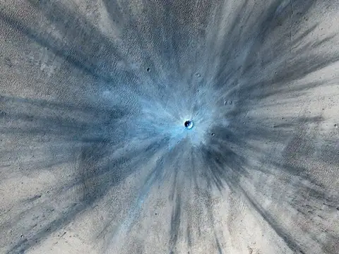
Articles · Mystery of Crater Rays Solved Thanks To Sandbox Play - Articles · A “Mini-Ice Age” Could Hit Earth By 2030, Scientists Warn
-
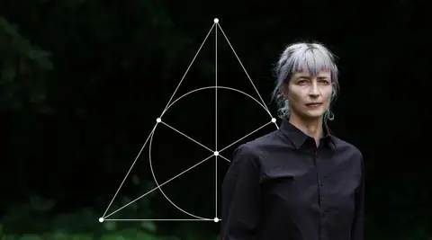
Articles · The Peculiar Math That Could Underlie the Laws of Nature -
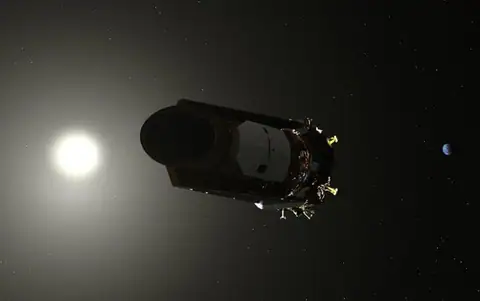
Articles · Planet-Hunting Kepler Telescope Wakes Up, Phones Home -
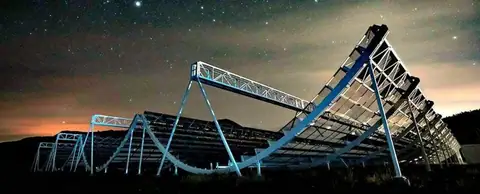
Articles · Astronomers Have Detected an Intense And Mysteriously Low Frequency Radio Signal Coming From Space -
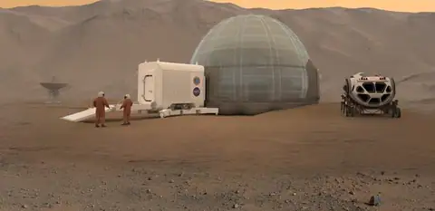
Articles · Sorry Elon Musk, But It’s Now Clear That Colonizing Mars Is Unlikely — And A Bad Idea - Articles · Whole New Worlds: An Aladdin History of Exoplanets | A Capella Science, Trudbol, SamRobson, Gia Mora
-
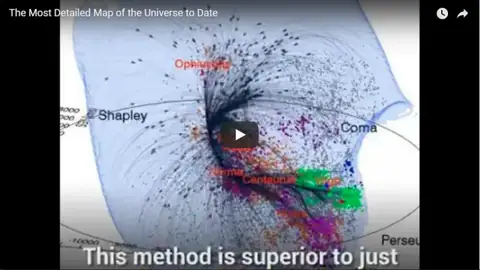
Articles · The Most Detailed Map of the Universe to Date -
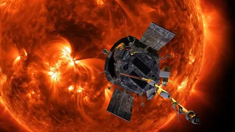
Articles · NASA’s Parker Solar Probe is attempting to touch the sun -
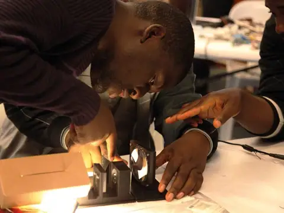
Articles · Open-science hardware in the developing world (Courtesy: TReND in Africa) -
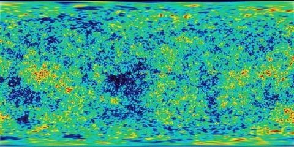
Articles · Apparent evidence for Hawking points in the CMB Sky -
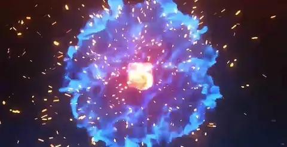
Articles · Dear Dr B: Is it possible that there is a universe in every particle? -
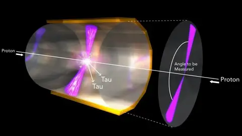
Articles · The Theory of Positrons -
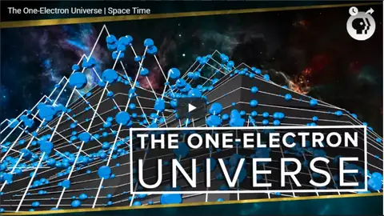
Articles · The One-Electron Universe | Space Time -
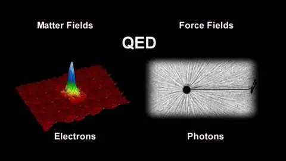
Articles · The Development of the Space-Time View of Quantum Electrodynamics -
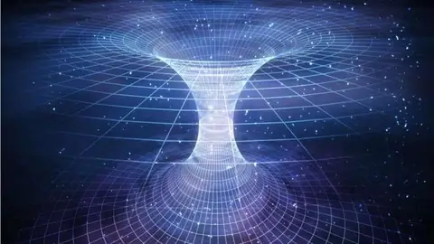
Articles · Scientists Have Measured Gravity At An Extremely Small Distance, And It Could Reveal The Secrets Of Extra Dimensions - Articles · A search for deviations from the inverse square law of gravity at nm range using a pulsed neutron beam
-
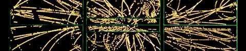
Articles · Theorists with a Swamp, not a Theory -
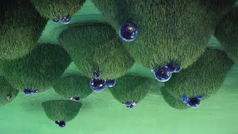
Articles · Dark Energy May Be Incompatible With String Theory -
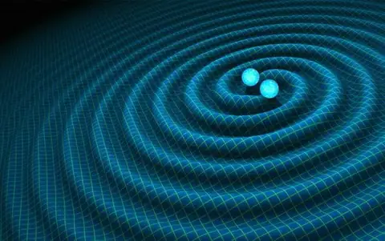
Articles · Is Gravity Quantum? -
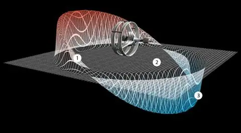
Articles · NASA ADMITS ALCUBIERRE DRIVE INITIATIVE: FASTER THAN THE SPEED OF LIGHT -
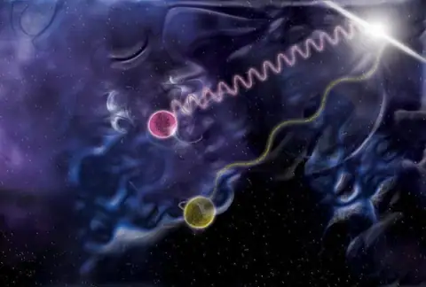
Articles · The Greatest Mistake In The History Of Physics -
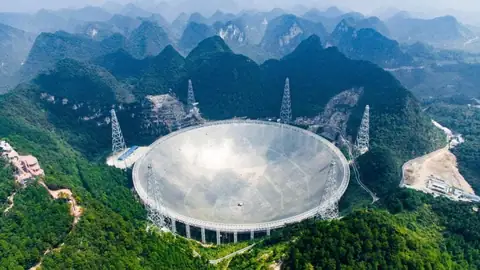
Articles · CHINA BUILT THE WORLD’S LARGEST TELESCOPE. THEN CAME THE TOURISTS -
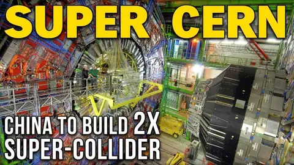
Articles · China Is Building Its Own Version Of CERN: Twice The Size And 7 Times More Powerful -
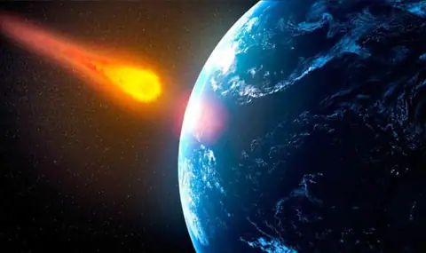
Science news · NASA Asteroid 2018 RC WARNING: Newly discovered asteroid to skim Earth on SUNDAY - Science news · Near-Earth Asteroid 2018 RC very close encounter: online observations – 8 Sept. 2018
- Science news · Japanese Space-Elevator Experiment Launching to Space Station Next Week (Really!)
- Articles · The night sky is so beautiful and mesmerizing
- Articles · How earth will look in 250 million years
- Articles · A Fundamental Physics Law Just Failed a Test Using Nanoscale Objects
- Articles · Polaritons
- Science news · اصغر زمن زبتو ثانية Zepto second
- Articles · NASA Announces First Astronaut Crews to Fly on Boeing and SpaceX Spaceships
- Science news · Star Walk – Explore the Sky
-
 Lectures and events · Group photo of the participants in the 2018 General Assembly of the International Astronomical Union
Lectures and events · Group photo of the participants in the 2018 General Assembly of the International Astronomical Union
August 2018
- Science news · ِِAstronomy Magazine – October 2018
- Science news · Sky At Night Magazine- September 2018
- AUASS news · Jordan joins International Astronomical Union
-
 Lectures and events · The 8th National Festival for Young Astronomy and Space Technology Enthusiasts
Lectures and events · The 8th National Festival for Young Astronomy and Space Technology Enthusiasts
- Articles · Strange ‘rogue planet’ travels through space alone
- Science news · BBC SkyatNight August 2018
- Science news · Astronomy August 2018
-
 AUASS news · The Jordanian Astronomical Society and AUASS hold a special lunar eclipse observing event in Ibbin
AUASS news · The Jordanian Astronomical Society and AUASS hold a special lunar eclipse observing event in Ibbin
July 2018
- Articles · Arab states have space programs: here on Earth, they need promotion
- Articles · 27–28 July 2018 — Total Lunar Eclipse — Amman
-
 AUASS news · Jordanian Astronomical Society statement on the major astronomical event: "Mars at opposition and a lunar eclipse"
AUASS news · Jordanian Astronomical Society statement on the major astronomical event: "Mars at opposition and a lunar eclipse"
-
 Lectures and events · Invitation to the astronomy evening "The longest eclipse of the century and the rare close approach of Mars"
Lectures and events · Invitation to the astronomy evening "The longest eclipse of the century and the rare close approach of Mars"
-
 Lectures and events · Invitation to observe a set of unique astronomical phenomena!
Lectures and events · Invitation to observe a set of unique astronomical phenomena!
- Lectures and events · Astronomical observing workshop at Zarqa University
- Science news · Before the Big Bang – YouTube
-
 Science news · The Universe – Beyond the Big Bang – Youtube
Science news · The Universe – Beyond the Big Bang – Youtube
-
 Science news · Scientists Have Figured Out When And How Our Sun Will Die, And It’s Going to Be Epic
Science news · Scientists Have Figured Out When And How Our Sun Will Die, And It’s Going to Be Epic
- Science news · Development in astronomy and space science in Africa
June 2018
- Science news · Saudi experts discuss ways to promote astronomy
- Science news · هل نحن وحيدون في هذا الكون ؟ – ماكس تيجمارك
- Science news · TIMELINE OF THE UNIVERSE
- Science news · SkyWeek (Free!)
- Science news · SkEye
-
 AUASS news · Dr. Awni Mohammad Khasawneh, Director of the Regional Centre and Secretary General of AUASS, at the 61st session of the UN Committee on the Peaceful Uses of Outer Space
AUASS news · Dr. Awni Mohammad Khasawneh, Director of the Regional Centre and Secretary General of AUASS, at the 61st session of the UN Committee on the Peaceful Uses of Outer Space
-
 Lectures and events · The 12th Arab Conference on Space and Astronomy Sciences and the 7th Islamic Astronomical Conference
Lectures and events · The 12th Arab Conference on Space and Astronomy Sciences and the 7th Islamic Astronomical Conference
- Science news · Australian Sky & Telescope – MAY/JUNE 2018 ISSUE 109
- Science news · Sky News – MAY/JUNE 2018
- Science news · Australian Sky & Telescope magazine – JULY 2018 ISSUE 110
May 2018
-
 AUASS news · The Grand Mufti, the Director of the Royal Geographic Centre and the representative of the Institute of Astronomy: our fast is valid
AUASS news · The Grand Mufti, the Director of the Royal Geographic Centre and the representative of the Institute of Astronomy: our fast is valid
-
 Lectures and events · Symposium: no conflict between Sharia and astronomy in determining the Ramadan crescent
Lectures and events · Symposium: no conflict between Sharia and astronomy in determining the Ramadan crescent
- AUASS news · Professor El Eid represents Lebanon on Arab Union for Astronomy and Space Sciences
- Lectures and events · Proceedings of the 12th Arab Conference on Space and Astronomy Sciences and the 7th Islamic Astronomical Conference
- AUASS news · Arab astronomy conference begins under Prince Hamzah’s patronage
April 2018

March 2018
-
 Lectures and events · The 16th National Festival of Public Astronomy
Lectures and events · The 16th National Festival of Public Astronomy
-
 Lectures and events · The 7th National Festival for Young Astronomy and Space Technology Enthusiasts
Lectures and events · The 7th National Festival for Young Astronomy and Space Technology Enthusiasts
- Science news · تيانجونج-1: المحطة الفضائية الصينية في طريقها الى التحطم خلال أسابيع
- Science news · IAGA-V Symposium
- Science news · Geoscience Education and Outreach for Sustainable Transformational Change in the Middle East and North Africa Region
-
 Lectures and events · Basics of Astronomy course – Dr. Anwar Saleh Al Mohammed (YouTube)
Lectures and events · Basics of Astronomy course – Dr. Anwar Saleh Al Mohammed (YouTube)
February 2018
-
 Lectures and events · TV interview with Hani Al-Dhulaie and Jordanian student Sara Amjad Ghazal
Lectures and events · TV interview with Hani Al-Dhulaie and Jordanian student Sara Amjad Ghazal
-
 AUASS news · AUASS President Dr. Hamid Al-Naimiy and Secretary General Dr. Awni Khasawneh visit the site of the Regional Centre for Space Science and Technology Education for Western Asia
AUASS news · AUASS President Dr. Hamid Al-Naimiy and Secretary General Dr. Awni Khasawneh visit the site of the Regional Centre for Space Science and Technology Education for Western Asia
- Articles · Reaching for the skies: Modern space science in the Arab world
- Science news · كسوف الشمس الكلي في 15 فبراير 2018 – إعداد محمد طالب السلامي
January 2018
- AUASS news · Dr. Awni Mohammad Khasawneh interviewed on Jordan Radio (audio)
-
 Lectures and events · Lecture by Dr. Abdelqader Abed: "The Sky Dome Speaks" (video)
Lectures and events · Lecture by Dr. Abdelqader Abed: "The Sky Dome Speaks" (video)
-
 Lectures and events · Lecture on parallel universes by Dr. Ammar Sakaji at the Jordanian Astronomical Society
Lectures and events · Lecture on parallel universes by Dr. Ammar Sakaji at the Jordanian Astronomical Society
-
 Lectures and events · TV recording of Dr. Mohammad Basil Al-Taie's lecture at AUASS headquarters
Lectures and events · TV recording of Dr. Mohammad Basil Al-Taie's lecture at AUASS headquarters
-
 AUASS news · Celebration by the Jordanian Physical Society in cooperation with the Jordanian Astronomical Society
AUASS news · Celebration by the Jordanian Physical Society in cooperation with the Jordanian Astronomical Society
-
 Lectures and events · AUASS takes part in the Third International Conference on the History of Arab and Islamic Sciences
Lectures and events · AUASS takes part in the Third International Conference on the History of Arab and Islamic Sciences
-
 AUASS news · Jordan unanimously elected director and member of the Regional Office of Astronomy for Development
AUASS news · Jordan unanimously elected director and member of the Regional Office of Astronomy for Development
-
 Lectures and events · Astronomy lecture: a course on the life of stars and telescopes at the Jordanian Astronomical Society
Lectures and events · Astronomy lecture: a course on the life of stars and telescopes at the Jordanian Astronomical Society
-
 Lectures and events · The 12th Arab Conference on Space and Astronomy Sciences and the 7th Islamic Astronomical Conference
Lectures and events · The 12th Arab Conference on Space and Astronomy Sciences and the 7th Islamic Astronomical Conference
No posts of this type in this year.